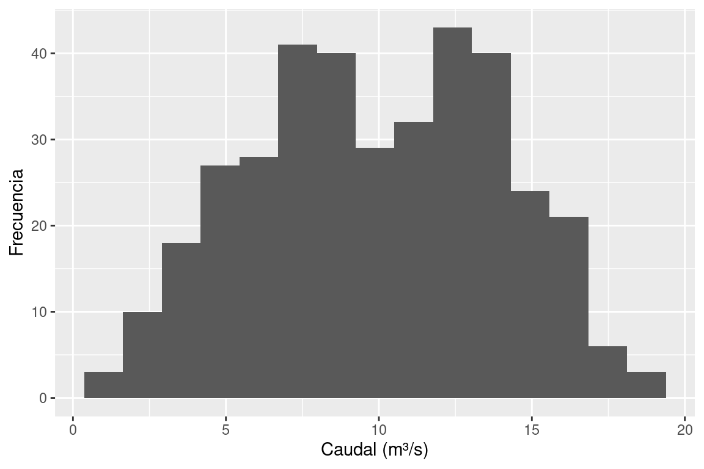
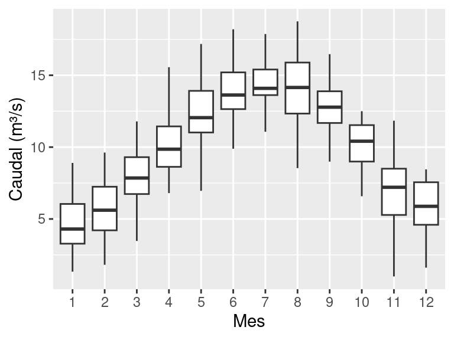
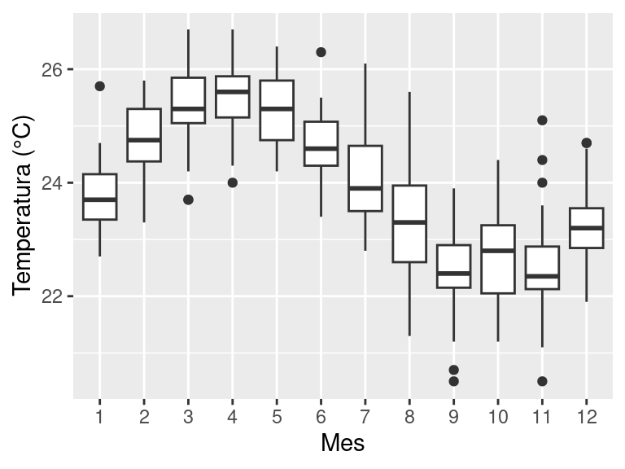

library(tidyverse)
datos <- read_csv("datos/ejemplo-hidro.csv")
ggplot(datos, aes(x = caudal_m3s)) +
geom_histogram(bins = 15) +
labs(x = "Caudal (m³/s)", y = "Frecuencia")
En un documento técnico es habitual referirse a figuras y tablas dentro del texto: “como se muestra en la Figura 1” o “los valores se presentan en la Tabla 2”. Las referencias cruzadas de Quarto automatizan esta numeración: si agregas o reorganizas figuras, los números se actualizan solos.
Para que funcionen, necesitas dos cosas:
label) en la figura o tabla.@.Para que una figura sea referenciable, el bloque de código necesita una etiqueta que empiece con fig- y un fig-cap:
library(tidyverse)
datos <- read_csv("datos/ejemplo-hidro.csv")
ggplot(datos, aes(x = caudal_m3s)) +
geom_histogram(bins = 15) +
labs(x = "Caudal (m³/s)", y = "Frecuencia")
En tu texto Markdown, escribe @fig-distribucion-caudal para insertar la referencia:
La @fig-distribucion-caudal muestra la distribución del caudal observado.Resultado: La Figura 5.1 muestra la distribución del caudal observado.
fig-.tbl-.| Opción | Descripción | Ejemplo |
|---|---|---|
fig-width |
Ancho en pulgadas | fig-width: 7 |
fig-height |
Alto en pulgadas | fig-height: 5 |
fig-align |
Alineación | fig-align: center |
out-width |
Ancho en el documento | out-width: "80%" |
Puedes mostrar varias figuras lado a lado usando layout-ncol:
ggplot(datos, aes(x = factor(mes), y = caudal_m3s)) +
geom_boxplot() +
labs(x = "Mes", y = "Caudal (m³/s)")
ggplot(datos, aes(x = factor(mes), y = temperatura_c)) +
geom_boxplot() +
labs(x = "Mes", y = "Temperatura (°C)")

Puedes referenciar el panel completo con @fig-panel-ejemplo o cada subfigura individual con @fig-panel-ejemplo-1 y @fig-panel-ejemplo-2.
También puedes insertar imágenes externas con referencias cruzadas:
{#fig-logo-ikiam fig-align="center" width=200}Y referenciarla con @fig-logo-ikiam. Por ejemplo: la @fig-logo-ikiam muestra el logo actual de la URAI se verá como: la Figura 5.3 muestra el logo actual de la URAI
knitr::kable()La forma más sencilla de crear una tabla desde R:
datos |>
group_by(mes) |>
summarise(
caudal_medio = round(mean(caudal_m3s), 1),
temp_media = round(mean(temperatura_c), 1),
precip_total = round(sum(precipitacion_mm), 0)
) |>
knitr::kable(
col.names = c("Mes",
"Caudal medio (m³/s)",
"Temp. media (°C)",
"Precip. total (mm)")
)| Mes | Caudal medio (m³/s) | Temp. media (°C) | Precip. total (mm) |
|---|---|---|---|
| 1 | 4.7 | 23.8 | 54 |
| 2 | 5.5 | 24.8 | 64 |
| 3 | 8.0 | 25.4 | 64 |
| 4 | 10.2 | 25.5 | 80 |
| 5 | 12.4 | 25.3 | 131 |
| 6 | 13.9 | 24.7 | 191 |
| 7 | 14.3 | 24.1 | 177 |
| 8 | 14.2 | 23.3 | 131 |
| 9 | 12.7 | 22.5 | 151 |
| 10 | 10.1 | 22.7 | 104 |
| 11 | 6.8 | 22.5 | 62 |
| 12 | 5.9 | 23.3 | 36 |
Referencia en el texto: Los promedios mensuales se presentan en la @tbl-resumen-mensual.
Se muestra en el documento como: Los promedios mensuales se presentan en la Tabla 5.1.
gtEl paquete gt permite crear tablas con formato más profesional:
library(gt)
datos |>
summarise(
n = n(),
media = mean(caudal_m3s),
mediana = median(caudal_m3s),
desv_est = sd(caudal_m3s),
minimo = min(caudal_m3s),
maximo = max(caudal_m3s)
) |>
gt() |>
fmt_number(columns = c(media, mediana, desv_est, minimo, maximo),
decimals = 2) |>
cols_label(
n = "N",
media = "Media",
mediana = "Mediana",
desv_est = "Desv. Est.",
minimo = "Mínimo",
maximo = "Máximo"
)| N | Media | Mediana | Desv. Est. | Mínimo | Máximo |
|---|---|---|---|---|---|
| 365 | 9.92 | 9.98 | 4.01 | 1.00 | 18.75 |
Referencia en el texto: Como se observa en la @tbl-estadisticas, el caudal...
Se muestra en el documento como: Como se observa en la Tabla 5.2, el caudal presenta variabilidad considerable.
| Tipo | Prefijo de etiqueta | Ejemplo de referencia |
|---|---|---|
| Figura | fig- |
@fig-nombre |
| Tabla | tbl- |
@tbl-nombre |
| Ecuación | eq- |
@eq-nombre |
| Sección | sec- |
@sec-nombre |
Recuerda que también puedes referenciar ecuaciones. En el capítulo de Markdown vimos la Ecuación 3.1 y la Ecuación 3.2.
Crea un documento Quarto que simule un mini-informe técnico con:
label: fig-...)fig-cap)@fig-...)knitr::kable() o gt, con:
label: tbl-...)tbl-cap)@tbl-...)Puedes usar el dataset datos/ejemplo-hidro.csv o cualquier otro que tengas disponible.